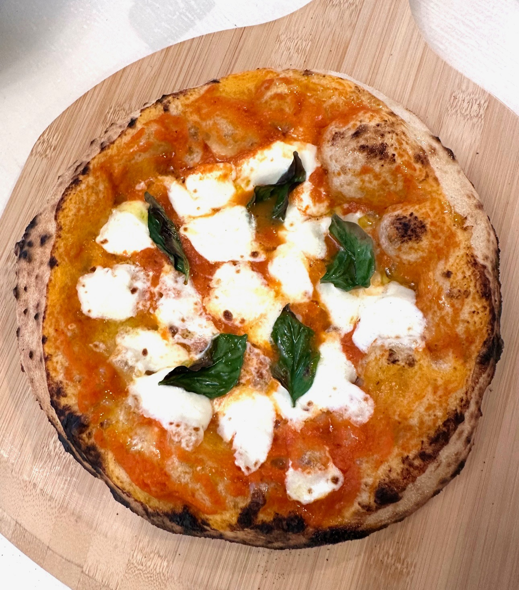

About This Recipe
Making authentic Neapolitan pizza is an art. With fresh ingredients, patience, and high temperatures, you can craft a pizza that rivals those in Italy.
Steps to Make Authentic Neapolitan Pizza
-
Gather the Freshest Ingredients Possible! This includes:
- 00 Tipo Pizza Flour
- Fresh Mozzarella (or Buffalo Mozzarella)
- Fresh San Marzano Tomatoes
- Italian Olive Oil
- Freshly Picked Basil
-
Make the Dough
- Mix 512 grams of water heated to exactly 100 degrees with 4 grams of active dry yeast.
- In a separate bowl, mix 800 grams of 00 Tipo flour with 16 grams of fine sea salt.
- Combine the two mixtures and mix until a rough dough forms.
- Let the dough rest for 20 minutes in a bowl covered with plastic wrap.
- After 20 minutes, take the dough out and slap it on the counter repeatedly until a smooth dough forms.
-
Resting Period
- Rest the dough in a bowl coated with olive oil in the fridge for 14–18 hours.
- Once proofed, flatten the dough and form 250-gram dough balls.
- Place the dough balls inside a floured proofing box to proof for an additional 2–3 hours.
-
Assemble the Pizza
- Using semolina flour to prevent sticking, form the dough into a ~12-inch round.
- Place the round on a pizza peel and add fresh sauce of your choice.
- Tear fresh mozzarella evenly over the pizza.
- Place 6–8 basil leaves evenly across the pizza.
-
Cook the Pizza
- Using the peel, carefully slide the pizza into a pizza oven heated to 800–850 degrees Fahrenheit.
- Rotate the pizza for an even cook, looking for small charred spots.
- Remove the pizza after 90 seconds or when the crust is golden brown with small black spots.
- Enjoy Your Homemade Authentic Neapolitan-Style Pizza!
Final Product
Above is an example of a perfectly cooked, charred Neapolitan-style pizza straight from the oven.
Neapolitan Pizza Masterclass
Below is a graph showing popular pizza toppings, including healthier options. Everyone has their favorites, but pineapple is mine!